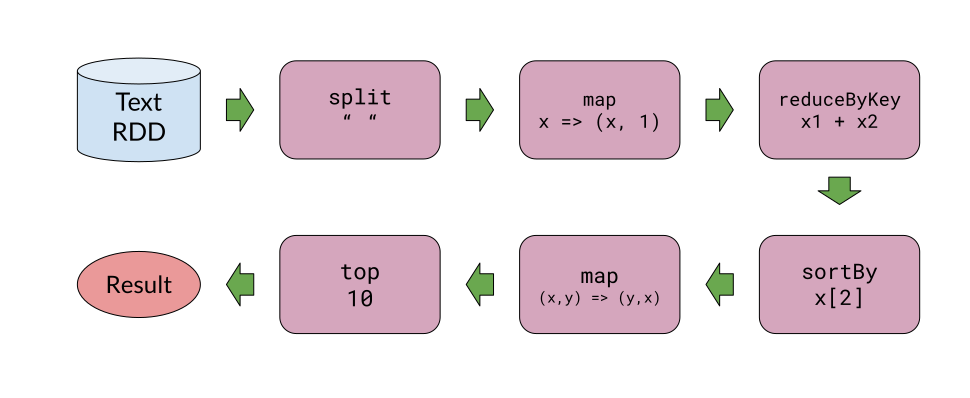
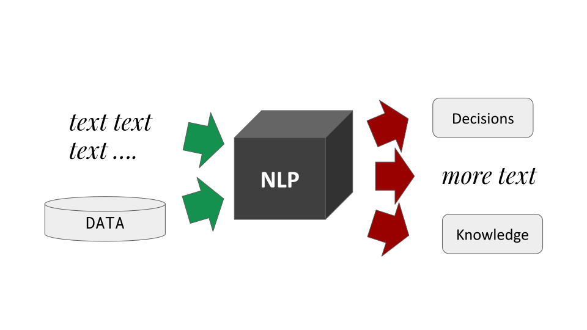
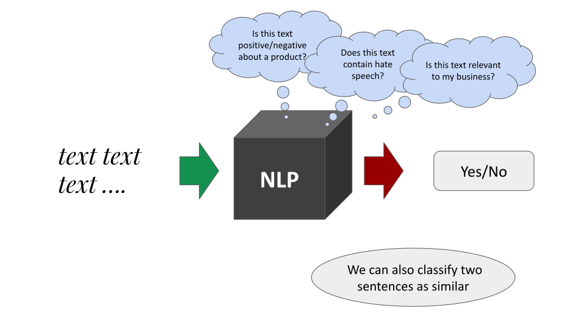
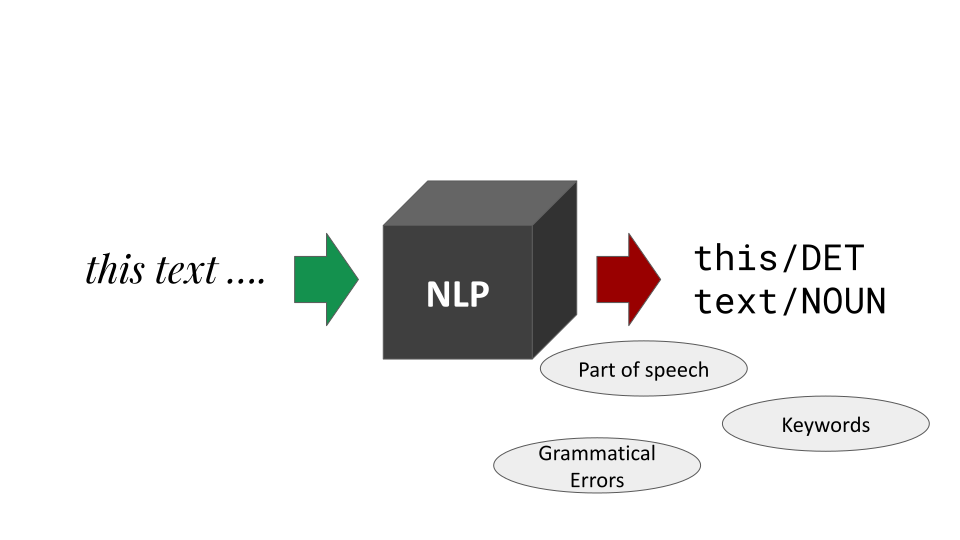
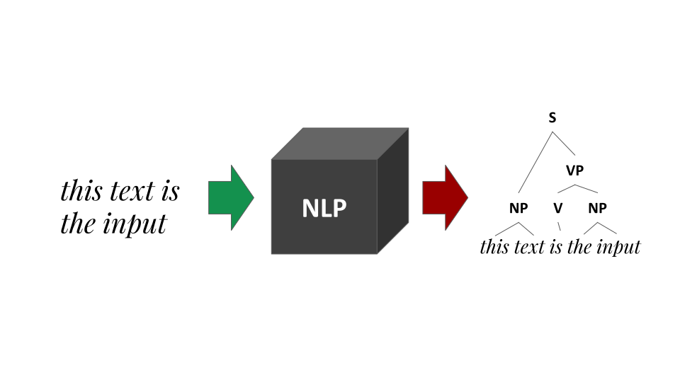
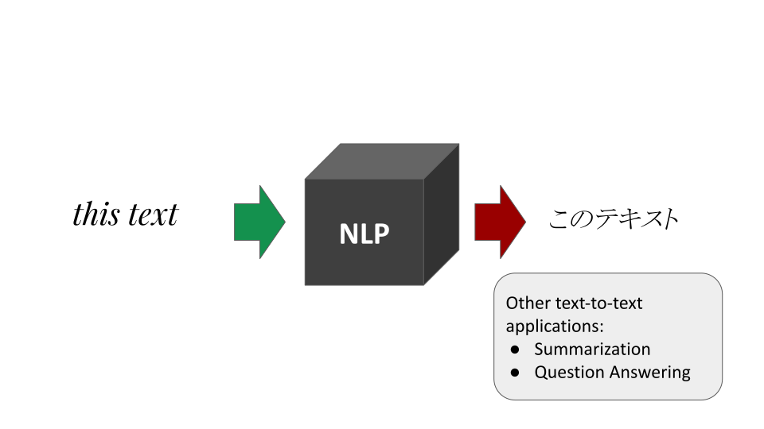
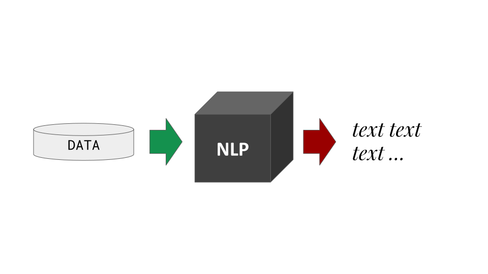
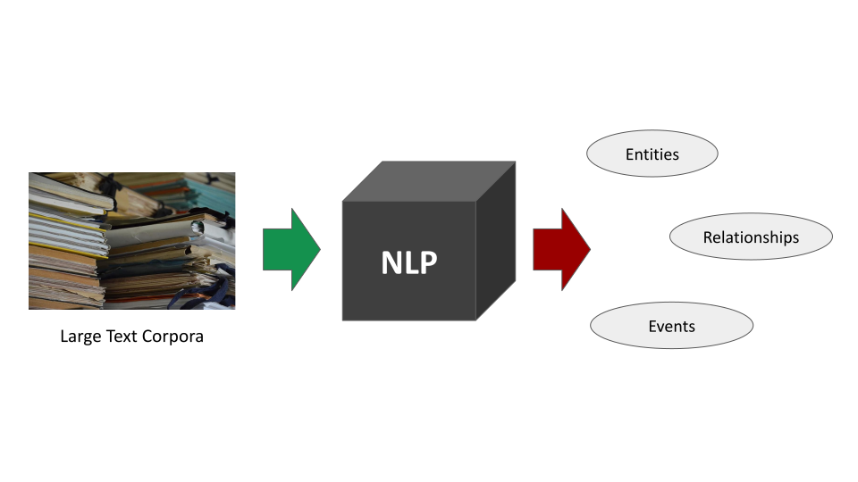
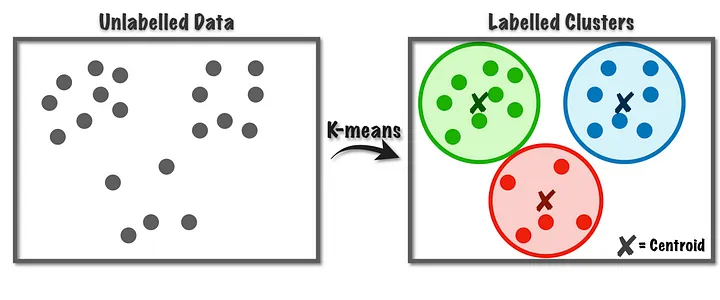
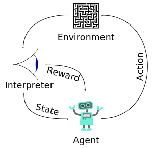

Fundamentals of Linguistic Data Science
John P. McCrae - University of Galway
Course at ESSLLI 2023
Course Overview
Lectures
- Mon: Fundamentals of Linguistic Data Science
- Tue: Syntax
- Wed: Semantics (incl. Large Language Models)
- Thu: Multilinguality
- Fri: Perspectives
Course materials
- Webpage - https://jmcrae.github.io/lds-esslli23
- Access to all code and slides through this URL
Hands-on sections
- We will use Python
- Very simple examples, no previous knowledge required
- You will need your laptop to follow along!
About me
- Assistant Professor at University of Galway, Ireland
- Researcher in NLP, Linked Data, Digital Humanities
- More at https://john.mccr.ae
About you
Go to https://www.menti.com/alddspo43ixxWhat is Data Science?
What is Linguistic Data Science?
Natural Language Processing
- Builds system
- No linguistic knowledge needed!
Linguistic Data Science
- Uses machine learning
- Answers linguistic questions
Quantitative (Corpus) Linguistics
- Statistics
- Only corpus data
Data Ingestion
- Structured Data
- such as CSV, databases, XML
- Unstructured Data
- such as text, images, audio
Data Storage
- Cleaning
- Deduplication
- ETL
- Databases
Data Analysis
- Data Exploration
- Predictive Analytics
- Machine Learning
Communication
- Visualisation
- Reporting
- Dashboards
Examples of Data Science
- Customer Analytics
- Supply Chain Optimisation
- Improving Patient Care
Methods for Data Science
Data Storage
SQL
SELECT * FROM table WHERE conditionData is stored in a tables; can be difficult to represent complex data
NoSQL
{
"name": "John McCrae",
"affiliation": "University of Galway",
"email": "john@mccr.ae"
}Flexible data structures; can be difficult to query
Graph Databases
(John McCrae)-[:affiliation]->(University of Galway)
(John McCrae)-[:email]->(john@mccr.ae)More flexibility but can be very slow to query
Scaling Tools
Apache Hadoop
Based on MapReduce
Word List
Map-Reduce
Splitting
aardvark
...
zebra
Map-Reduce
Mapping (word length)
8
...
5
Map-Reduce
Reducing (average)
4.52
Apache Spark
- Based on Resilient Distributed Datasets (RDDs)
- Streaming and batch processing 
Analytic Tools
Jupyter/Colab
- Go to https://colab.research.google.com
- Create a new notebook
Pandas
- Library for data science in Python
- Try the following
import pandas as pd
data = pd.read_csv("https://raw.github" +
"usercontent.com/cs109/2014_data/" +
"master/countries.csv")
data.describe() Other languages
- R - Very popular in statistics
- Julia - New fast language for data science
- Scala - Java-based functional programming
Visualisation Tools
D3.js
GalleryMatplotlib
import matplotlib.pyplot as plt
plt.hist(data["Region"])Seaborn
GalleryCorpora and Data
Types of Linguistic Data
- Corpora - collections of texts
- Lexicons - information about words
- Knowledge bases - structured information about the world
- Typological databases - information about languages
Plain-text Corpora
- Sources such as Project Gutenberg, Wikipedia
- Curated corpora such as British National Corpus and Open American National Corpus
- Massive web corpora such as C4
- 300GB of English data, 9.7TB total!
Annotated Corpora
- Corpora with syntactic, semantic and other annotations
- Universal Dependencies
- Penn Treebank
- PropBank
Universal Dependencies
| ID | Form | Lemma | UPOS | XPOS | Head | Dep |
|---|---|---|---|---|---|---|
| 1 | The | the | DET | Definite=Def|PronType=Art | 2 | det |
| 2 | prevalence | prevalence | NOUN | Number=Sing | 0 | root |
| 3 | of | of | ADP | _ | 4 | case |
| 4 | discrimination | discrimination | NOUN | Number=Sing | 2 | nmod |
| 5 | across | across | ADP | _ | 7 | case |
| 6 | racial | racial | ADJ | Degree=Pos | 7 | amod |
| 7 | groups | group | NOUN | Number=Plur | 2 | nmod |
| 8 | in | in | ADP | _ | 10 | case |
| 9 | contemporary | contemporary | ADJ | Degree=Pos | 10 | amod |
| 10 | America | America | PROPN | Number=Sing | 2 | nmod |
Parallel Corpora
Parallel Corpus Example
| English | Irish |
|---|---|
| Monitoring of the Implementation of Certain Commitments in your Language Scheme | Tag: faireachán ar chur i bhfeidhm gealltanais áirithe de bhur scéim teanga |
| Hope you are keeping well. | Beatha agus Sláinte. |
| Thank you for your co-operation on this matter. | Gabhaim buíochas leat as ucht do chomhoibriú ar an ábhar seo. |
| Kind regards, | Is mise, le meas, _______________ |
Lexicons
- Open English WordNet - English
- BabelNet - 271 languages
- FrameNet - English
Knowledge Bases
Typologies
Natural Language Processing
NLP as a Black Box
Sentiment Analysis
Annotation
Parsing
Machine Translation
Natural Language Generation
Information Extraction
Machine Learning
Supervised Learning

Unsupervised Learning
Source: https://towardsdatascience.com/k-means-a-complete-introduction-1702af9cd8cReinforcement Learning

Source: WikipediaDeep Learning (pretrained models)

Summary
Summary
- Linguistic Data Science is application of data science to linguistics
- Answers linguistic questions using:
- Big Data
- Natural Language Processing
- Machine Learning